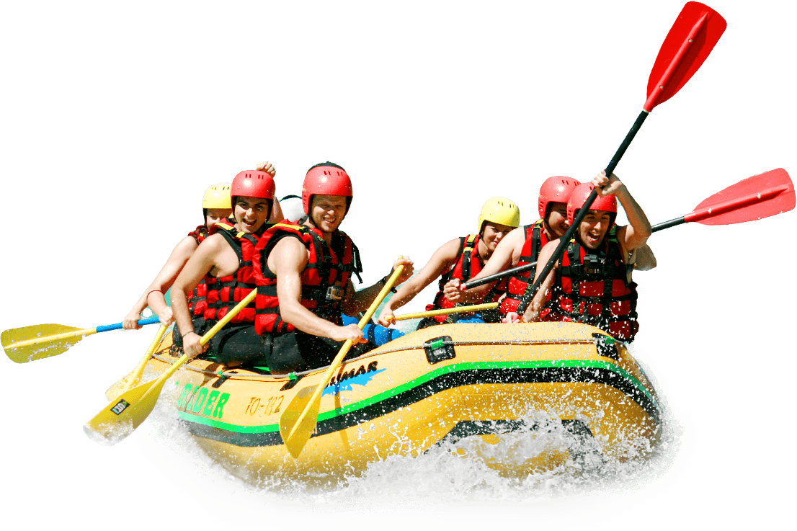

PURPOSE: Ensure an unforgettable rafting experience
MOTTO: Splash for an immersive adventure.
MISSION: Provide good and unforgettable event as rafting is concerned
CREED: Respect the river, and it will respect you.

PURPOSE: Ensure an unforgettable rafting experience
MOTTO: Splash for an immersive adventure.
MISSION: Provide good and unforgettable event as rafting is concerned
CREED: Respect the river, and it will respect you.
White water rafting has its roots in the early 19th century, when explorers and adventurers first began navigating the world's most rugged and turbulent rivers. One of the earliest recorded instances of white water rafting was in 1811, when an American explorer named Robert Stuart led an expedition down the Snake River in Idaho. However, it wasn't until the mid-20th century that white water rafting began to gain popularity as a recreational activity. In the 1950s and 1960s, rafting enthusiasts began to develop new techniques and technologies, such as inflatable rafts and safety gear, that made it possible for people of all skill levels to enjoy the sport.
The modern white water rafting industry began to take shape in the 1970s and 1980s, as commercial rafting companies began to offer guided trips on iconic rivers like the Colorado, the Snake, and the Salmon. Today, white water rafting is enjoyed by millions of people around the world, from casual float trips to extreme Class V rapids. Despite its growth and popularity, white water rafting remains a sport that is deeply connected to its natural environment and the thrill of exploring the unknown. Whether you're a seasoned rafter or a beginner, white water rafting offers an unparalleled adventure experience that combines excitement, beauty, and a deep connection to nature.